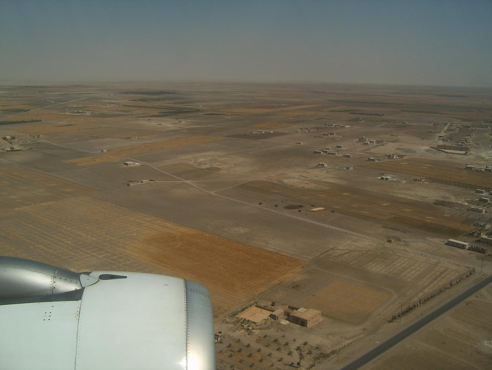

Projecten
Overig
Yarmouk Camp Syrie - 2006
Door Palestijnse vluchtelingenkampen te bezoeken, lezingen bij te wonen en te discussieren met Palestijnse vluchtelingen, verkregen we een beter beeld van de Palestijnse situatie.Palestinian youth center /jafra/ Syria Yarmouk camp
Euro-Palestinian summercamp, 15-29 July 2006
Heel goed kan ik me herinneren hoe het vliegtuig over een kaal, bruin landschap vloog. Zo anders als Nederland, als Europa, kon ik alleen maar denken. Want dat was mijn enige referentiekader; verder was ik nooit geweest. Deze reis naar Syrië was ook mijn eerste vliegreis. Nog een gedachte die door mijn hoofd ging was wat mijn vader voor mijn vertrek tegen me had gezegd: besef goed wat een voorrecht het is zo’n grote reis te kunnen maken. Hoewel ik nog nauwelijks een idee had van wat me te wachten stond, wist ik dat het een ervaring zou worden om nooit te vergeten.

Een jaar geleden had ik samen met Anoeshka een project van SIW in Tsjechië gedaan. Het was ons zo goed bevallen, dat we deze zomer weer een project wilden doen. Misschien weer in Oost-Europa, maar het liefst in het Midden-Oosten. Uit de lijst van korte termijn projecten op de site van VIA, sprak die in Syrië ons het meest aan. Om een indruk te geven is hier de eerste zin van de beschrijving van het project: The objectives of this workcamp are to promote the idea of a democratic Palestine, especially after the victory of Hamas during the last elections, to participate to some activities of the centre and, for those who want it, to conceive new projects in collaboration with Jafra. Vooral in verband met de studie die we beiden doen, culturele antropologie en ontwikkelingsstudies in Nijmegen, leek dit project ons erg interessant. Anoeshka doet extra vakken van conflictstudies, en ik van Midden-Oosten studies.
Gesprekken met Lokien, ervaringsdeskundige bij VIA van het Midden-Oosten gebied, en het voorbereidingsweekend maakten ons nog enthousiaster voor het project.
Op 12 juli, de dag voor ons vertrek, zagen we het nieuws op het journaal over de kidnapping van de Israëlische soldaat door Hezbollah. Ons plan om na het project door Libanon te reizen, zetten we meteen uit ons hoofd, maar we beseften ons toen wel dat het gebeuren invloed zou hebben op het project in Damascus.
Op 13 juli liepen we met onze volle rugzakken over het vliegveld van Damascus. Nog verdwaasd van de reis, die twee uur langer duurde doordat ons vliegtuig niet over Libanon kon vliegen, zagen we ineens tussen de vele mensen twee lachende mensen die vrolijk naar ons zwaaiden. Door hen werden we in een kleine, gele taxi over drukke wegen met chaotisch toeterend verkeer naar het Jafra Youth Center in het Yarmouk Camp gebracht. Onderweg verbaasde ik me over het landschap; zo droog, kaal met palmbomen, over de warme wind die door de open ramen naar binnen waaide en aanvoelde als een föhn, over het verkeer dat op mij de indruk maakte van totale afwezigheid van verkeersregels, over de Palestijnse jongen voorin de auto die in gebroken engels druk en vrolijk tegen ons aanpraatte. Ik lachte naar Anoeshka en voelde me goed.
Yarmouk Camp is in 1948 als Palestijns vluchtelingenkamp ontstaan. In de loop van de tijd groeide het en veel Palestijnen openden er winkeltjes. Het goedkoop kunnen winkelen en wonen trok ook Syriërs aan, en uiteindelijk is Yarmouk officieel een deel van Damascus geworden. Het Jafra Jeugd Centrum ligt in één van de kleine straatjes van de hoofdstraat: Yarmoukstreet. In het straatje hangen aan de muren veel Palestijnse politiekbeladen affiches.
Jafra is gevestigd in een hoekgebouw met twee deuren: de ene geeft toegang tot een zaal met een klein kantoortje en nog een ruimte waar de theatergroep van Jafra wekelijks oefent. Achter de andere deur is een trap die naar boven leidt, onder andere langs het kantoor van de communistische Palestijnse partij PFLP. Op de bovenste verdieping bevonden zich naast toilet, douche en een keukentje, een paar ruimtes die wij gebruikten als slaapkamer.
Anoeshka en ik werden leuk ontvangen. We maakten kennis met een klein groepje Palestijnse jongeren en met mierzoete thee. Om ons te kunnen oriënteren waar we precies waren, probeerden we Yarmouk-Camp te vinden op ons kaartje van Damascus. Het stond er niet op. De reactie op onze verbazing zullen we nooit vergeten: ‘Yarmouk is not on the map, but in our hearts.’ Er volgde gelach.
De eerste dag van het project, 15 juli, was de groep Europese vrijwilligers compleet: twee meiden uit Zwitserland, een meisje en een jongen uit België, een vrouw en een jongen uit Italië, twee meiden uit Engeland, een jongen uit Tsjechië en wij twee. Anoeshka en ik waren de enige die elkaar al kenden. We kregen allen een programma waarop de activiteiten per dag waren genoteerd; lezingen, bezoeken aan Palestijnse organisaties maar ook ‘toeristische’ dingen zoals het bezoeken van Old Damascus en de Romeinse ruïnes van Palmyra.
Die twee weken nam ik mijn kladblok en pen overal mee naar toe. Alles wilde ik vastleggen. Mijn hoofd liep over van de indrukken en informatie en ik was doodsbang dat ik dingen zou vergeten.
Door middel van lezingen kregen we informatie over onder andere de geschiedenis van het Palestijns-Israëlisch conflict, over de huidige politieke situatie in het Midden-Oosten en over de Palestijnse cultuur. Dankzij bezoeken aan bijvoorbeeld andere vluchtelingenkampen in Damascus, scholen, een redactie van een tijdschrift, een kunstcentrum, leerden we de situatie van Palestijnen nog beter kennen. Er vonden veel interessante discussies plaats waarbij het gat tussen overheden en volk vaak ter sprake kwam. Ik vond het heel indrukwekkend om de Palestijnse kant van het verhaal te horen. De persoonlijke verhalen maakten de situatie voor mij zoveel intenser; het ging niet meer alleen om theoretische feiten, maar ook om mensen. Mensen met dromen over een betere toekomst, mensen met verlangens, angsten… Uitspraken als 'Palestine is my dream, my life, my sole, my hope...' maakte het zo veel realistischer. Ik bekeek het nu heel anders.
Het meest indrukwekkend vond ik onze deelname aan een Palestijnse demonstratie in Yarmouk tegen de oorlog in Libanon en ons bezoek aan een school waarin honderden Libanese vluchtelingen onderdak hadden gekregen. Tijdens de demonstratie was ik me er heel erg van bewust hoe sterk het groepsgevoel onder de demonstranten was. Alle vlaggen, het klappen en schreeuwen was zowel beangstigend als opzwepend. Het bezoek aan de Libanese vluchtelingen overviel de meeste vrijwilligers een beetje. Helemaal gesluierd werden we in kleine groepjes naar binnen geloodst, want de bewaking bij de ingang mocht niet weten dat er buitenlanders naar binnen gingen. In groepjes met jongeren van Jafra deelden we het meegebrachte eten uit. In elk klaslokaal bleken 30 vluchtelingen te ‘wonen’. Na een half uur stonden we alweer buiten, vol van indrukken.

Ik merkte dat ik op een gegeven moment overgeprikkeld raakte van alle indrukken en informatie, maar gelukkig stonden er genoeg ontspannende dingen op het programma. Zo hebben we bijvoorbeeld ook een christelijk klooster bezocht. Het klooster, Mar Musa genaamd, ligt tegen een berghelling midden in de woestijn. Het was er heerlijk tot rust komen. Het bezoek aan Palmyra was ook prachtig en ik genoot van het slenteren door moskeeën van Damascus.
Omdat alle vrijwilligers ook samen graag iets wilden produceren naast het krijgen van veel informatie en ervaringen hadden we het plan opgevat samen een soort krant te schrijven met onderwerpen als de huidige situatie van Palestijnse vluchtelingen, toekomstdromen van Palestijnen en ons project in Jafra. We hebben de krant de naam ‘Palestijn Now!’ gegeven en hij is inmiddels af. De krant sluit af met een zin van elke vrijwilliger die hij de lezer mee wil geven. Opvallend is dat ze, ondanks dat we ze onafhankelijk van elkaar bedacht hebben, dezelfde strekking hebben; we hebben veel geleerd, en wat we geleerd, gezien en ervaren hebben, heeft ons geraakt. Mijn zin luid: During the work camp in the Jafra Youth Centre I started to realize that the Palestinian cause is not only about land, but about dreams, hopes and identity. This insight is very important and I see it as my obligation to share it with people back in the Netherlands.
Bij deze.
Links:
http://www.jafracenter.net/
Anoeshkaenroos.waarbenjij.nu (voor zolang deze nog bereikbaar is)